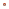
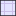

<!doctype html>
<html lang="en">
    <head>
        <meta charset="utf-8">
        <meta http-equiv="X-UA-Compatible" content="IE=edge">
        <meta name="viewport" content="initial-scale=1,user-scalable=no,maximum-scale=1,width=device-width">
        <meta name="mobile-web-app-capable" content="yes">
        <meta name="apple-mobile-web-app-capable" content="yes">
        <link rel="stylesheet" href="css/leaflet.css"><link rel="stylesheet" href="css/L.Control.Locate.min.css">
        <link rel="stylesheet" href="css/qgis2web.css"><link rel="stylesheet" href="css/fontawesome-all.min.css">
        <style>
        #map {
            width: 1088px;
            height: 619px;
        }
        </style>
        <title></title>
    </head>
    <body>
        <div id="map">
        </div>
        <script src="js/qgis2web_expressions.js"></script>
        <script src="js/leaflet.js"></script><script src="js/L.Control.Locate.min.js"></script>
        <script src="js/multi-style-layer.js"></script>
        <script src="js/leaflet.rotatedMarker.js"></script>
        <script src="js/leaflet.pattern.js"></script>
        <script src="js/leaflet-hash.js"></script>
        <script src="js/Autolinker.min.js"></script>
        <script src="js/rbush.min.js"></script>
        <script src="js/labelgun.min.js"></script>
        <script src="js/labels.js"></script>
        <script src="data/Linharespoliognos_1.js"></script>
        <script src="data/LinharesPontos_2.js"></script>
        <script>
        var highlightLayer;
        function highlightFeature(e) {
            highlightLayer = e.target;

            if (e.target.feature.geometry.type === 'LineString') {
              highlightLayer.setStyle({
                color: '#ffff00',
              });
            } else {
              highlightLayer.setStyle({
                fillColor: '#ffff00',
                fillOpacity: 1
              });
            }
            highlightLayer.openPopup();
        }
        var map = L.map('map', {
            zoomControl:true, maxZoom:28, minZoom:1
        }).fitBounds([[40.53909851554813,-7.463944811082903],[40.54143850642011,-7.458525124330841]]);
        var hash = new L.Hash(map);
        map.attributionControl.setPrefix('<a href="https://github.com/tomchadwin/qgis2web" target="_blank">qgis2web</a> &middot; <a href="https://leafletjs.com" title="A JS library for interactive maps">Leaflet</a> &middot; <a href="https://qgis.org">QGIS</a>');
        var autolinker = new Autolinker({truncate: {length: 30, location: 'smart'}});
        L.control.locate({locateOptions: {maxZoom: 19}}).addTo(map);
        var bounds_group = new L.featureGroup([]);
        function setBounds() {
        }
        map.createPane('pane_OpenStreetMap_0');
        map.getPane('pane_OpenStreetMap_0').style.zIndex = 400;
        var layer_OpenStreetMap_0 = L.tileLayer('https://tile.openstreetmap.org/{z}/{x}/{y}.png', {
            pane: 'pane_OpenStreetMap_0',
            opacity: 1.0,
            attribution: '',
            minZoom: 1,
            maxZoom: 28,
            minNativeZoom: 0,
            maxNativeZoom: 19
        });
        layer_OpenStreetMap_0;
        map.addLayer(layer_OpenStreetMap_0);
        function pop_Linharespoliognos_1(feature, layer) {
            layer.on({
                mouseout: function(e) {
                    for (i in e.target._eventParents) {
                        e.target._eventParents[i].resetStyle(e.target);
                    }
                    if (typeof layer.closePopup == 'function') {
                        layer.closePopup();
                    } else {
                        layer.eachLayer(function(feature){
                            feature.closePopup()
                        });
                    }
                },
                mouseover: highlightFeature,
            });
            var popupContent = '<table>\
                    <tr>\
                        <td colspan="2">' + (feature.properties['Nome'] !== null ? autolinker.link(feature.properties['Nome'].toLocaleString()) : '') + '</td>\
                    </tr>\
                    <tr>\
                        <td colspan="2">' + (feature.properties['CNS'] !== null ? autolinker.link(feature.properties['CNS'].toLocaleString()) : '') + '</td>\
                    </tr>\
                </table>';
            layer.bindPopup(popupContent, {maxHeight: 400});
        }

        function style_Linharespoliognos_1_0() {
            return {
                pane: 'pane_Linharespoliognos_1',
                opacity: 1,
                color: 'rgba(35,35,35,1.0)',
                dashArray: '',
                lineCap: 'butt',
                lineJoin: 'miter',
                weight: 1.0, 
                fill: true,
                fillOpacity: 1,
                fillColor: 'rgba(141,90,153,0.24705882352941178)',
                interactive: true,
            }
        }
        function style_Linharespoliognos_1_1() {
            return {
                pane: 'pane_Linharespoliognos_1',
                opacity: 1,
                color: 'rgba(35,35,35,1.0)',
                dashArray: '',
                lineCap: 'butt',
                lineJoin: 'miter',
                weight: 1.0, 
                fill: true,
                fillOpacity: 1,
                fillColor: 'rgba(0,0,255,0.10588235294117647)',
                interactive: true,
            }
        }
        map.createPane('pane_Linharespoliognos_1');
        map.getPane('pane_Linharespoliognos_1').style.zIndex = 401;
        map.getPane('pane_Linharespoliognos_1').style['mix-blend-mode'] = 'normal';
        var layer_Linharespoliognos_1 = new L.geoJson.multiStyle(json_Linharespoliognos_1, {
            attribution: '',
            interactive: true,
            dataVar: 'json_Linharespoliognos_1',
            layerName: 'layer_Linharespoliognos_1',
            pane: 'pane_Linharespoliognos_1',
            onEachFeature: pop_Linharespoliognos_1,
            styles: [style_Linharespoliognos_1_0,style_Linharespoliognos_1_1,]
        });
        bounds_group.addLayer(layer_Linharespoliognos_1);
        map.addLayer(layer_Linharespoliognos_1);
        function pop_LinharesPontos_2(feature, layer) {
            layer.on({
                mouseout: function(e) {
                    for (i in e.target._eventParents) {
                        e.target._eventParents[i].resetStyle(e.target);
                    }
                    if (typeof layer.closePopup == 'function') {
                        layer.closePopup();
                    } else {
                        layer.eachLayer(function(feature){
                            feature.closePopup()
                        });
                    }
                },
                mouseover: highlightFeature,
            });
            var popupContent = '<table>\
                    <tr>\
                        <th scope="row">id</th>\
                        <td>' + (feature.properties['id'] !== null ? autolinker.link(feature.properties['id'].toLocaleString()) : '') + '</td>\
                    </tr>\
                    <tr>\
                        <th scope="row">nome</th>\
                        <td>' + (feature.properties['nome'] !== null ? autolinker.link(feature.properties['nome'].toLocaleString()) : '') + '</td>\
                    </tr>\
                    <tr>\
                        <td colspan="2">' + (feature.properties['Intensidad'] !== null ? autolinker.link(feature.properties['Intensidad'].toLocaleString()) : '') + '</td>\
                    </tr>\
                    <tr>\
                        <td colspan="2">' + (feature.properties['Links'] !== null ? autolinker.link(feature.properties['Links'].toLocaleString()) : '') + '</td>\
                    </tr>\
                </table>';
            layer.bindPopup(popupContent, {maxHeight: 400});
        }

        function style_LinharesPontos_2_0(feature) {
            if (feature.properties['Intensidad'] >= 10.000000 && feature.properties['Intensidad'] <= 20.000000 ) {
                return {
                pane: 'pane_LinharesPontos_2',
                interactive: true,
            }
            }
            if (feature.properties['Intensidad'] >= 20.000000 && feature.properties['Intensidad'] <= 30.000000 ) {
                return {
                pane: 'pane_LinharesPontos_2',
                interactive: true,
            }
            }
            if (feature.properties['Intensidad'] >= 30.000000 && feature.properties['Intensidad'] <= 40.000000 ) {
                return {
                pane: 'pane_LinharesPontos_2',
                interactive: true,
            }
            }
            if (feature.properties['Intensidad'] >= 40.000000 && feature.properties['Intensidad'] <= 50.000000 ) {
                return {
                pane: 'pane_LinharesPontos_2',
                interactive: true,
            }
            }
        }
        map.createPane('pane_LinharesPontos_2');
        map.getPane('pane_LinharesPontos_2').style.zIndex = 402;
        map.getPane('pane_LinharesPontos_2').style['mix-blend-mode'] = 'normal';
        var layer_LinharesPontos_2 = new L.geoJson(json_LinharesPontos_2, {
            attribution: '',
            interactive: true,
            dataVar: 'json_LinharesPontos_2',
            layerName: 'layer_LinharesPontos_2',
            pane: 'pane_LinharesPontos_2',
            onEachFeature: pop_LinharesPontos_2,
            pointToLayer: function (feature, latlng) {
                var context = {
                    feature: feature,
                    variables: {}
                };
                return L.circleMarker(latlng, style_LinharesPontos_2_0(feature));
            },
        });
        bounds_group.addLayer(layer_LinharesPontos_2);
        map.addLayer(layer_LinharesPontos_2);
        var baseMaps = {};
        L.control.layers(baseMaps,{'Linhares Pontos<br /><table><tr><td style="text-align: center;"></td><td>fraco</td></tr><tr><td style="text-align: center;"></td><td>medio</td></tr><tr><td style="text-align: center;"></td><td>media alto</td></tr><tr><td style="text-align: center;"></td><td>medio bastante</td></tr></table>': layer_LinharesPontos_2,' Linharespoliognos': layer_Linharespoliognos_1,"OpenStreetMap": layer_OpenStreetMap_0,},{collapsed:false}).addTo(map);
        setBounds();
        </script>
    </body>
</html>
